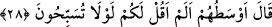

28. İçlerinden en mâkul olanı şöyle dedi: Ben size «Rabbinizi tesbih etsenize»
dememiş miydim?
“İçlerinden” görüşçe ya da yaşça “en mâkul olanı” Keşşaf’a göre; en âdili ve en
hayırlısı “şöyle dedi: Ben size; «Rabbinizi tesbih etsenize» dememiş miydim?”
Âyette yer alan “evsat” kelimesini biraz açmak gerekirse şunları diyebiliriz. Bu
kelime “fulanun min sitati kavmihi” cümlesinde “filânca kişi kendi kavminin ortasıdır”
anlamında; “a’tinî min sitâti mâlike” cümlesinde ise “bana malının orta hâlli
olanlarından ver” anlamında kullanılmıştır. Nitekim, “ümmeten vesatan” yâni orta
(âdil) bir ümmet” (el-Bakara, 2/143) âyetinde de kelime benzer bir mânâda
kullanılmıştır.
Kâşifî, evsat kelimesiyle ilgili şu açıklamayı yapar: “Onların akıl yönünden en fâzıl
olanı veya yaşça en büyükleri ya da fikirce en doğru olanı” demektir.
Râğıb İsfahânî der ki: “Vasat” kelimesi; cimrilik ve israf gibi iki tarafı kınanmış olup
cömertlik gibi bu iki kınanmış ucun ortasında bulunan şey anlamında kullanılır. Buna
göre vasat kelimesi, ifrat (aşırı gitme) ve tefrit (geri kalmak) gibi iki olumsuz sıfatın
arasındaki “orta yolu” ifâde etmek için kullanılır ve bununla övgü yapılır. “Adâlet
yolunu tutmak” ve “orta yolu tutmak” ifâdeleri böyledir. Nitekim “ümmeten vesatan”
ibâresi de bu anlamdadır. Bizim tefsirini yaptığımız bu âyet-i kerîmedeki kullanım da
yine bu anlamdadır. Bazen de kelime, hayır ve şer gibi bir tarafı iyi bir tarafı kınanmış
şeylerde kullanılarak kinâye yollu “kötülük” kasdedilir. Tıpkı “vasatun beyne’r-ricâl”
ifâdesinde olduğu gibi ki, bu cümleyle o kimsenin hayır ve iyilik sınırından çıkmış
olduğuna dikkat çekilir.
“Rabbinizi tesbih etsenize” ifâdesi; “Rabbinizi tesbih ve tehlil ile zikredip kötü
niyetlerinizden dolayı O’na tevbe etsenize” demektir. Aralarındaki bu mâkul kişi, bu
nasîhatini onlara bu yanlış fiillerine karar verdikleri zaman yapmıştı. Onlara: “Allah’ı
zikredin. O’nun günahkârlardan nasıl intikam aldığını hatırlayın. Bu kötü kararınızdan
dolayı derhal Allah’a tevbe edin. O’nun intikamı daha başınıza gelmeden bu kötü
niyetinize derhal son verin!” demek istemişti. Ancak onlar, bu nasîhatçiye karşı
gelmişler ve onu ayıplamışlardı.
Bu âyet-i kerîme, günah işlemeye karar vermenin insanın sorumlu tutulmasını
gerektiren bir husus olduğuna işâret etmektedir. Çünkü burada gördüğümüz gibi bahçe
sâhipleri yoksulları engellemeye karar vermişler ve daha fiillerini gerçekleştirmeden
cezâlandırılmışlardı. Bu âyet-i kerîmenin bir benzeri de; “İnkâr edenler, Allah’ın
yolundan ve yerli, taşralı bütün insanlara eşit kıldığımız mescid-i haramdan
(insanları) alıkoymaya kalkanlar (şunu bilmeliler ki) kim orada (böyle) zulüm ile
haktan sapmak isterse ona acı azaptan tattırırız.” (el-Hac, 22/25) Şu âyet-i kerîme